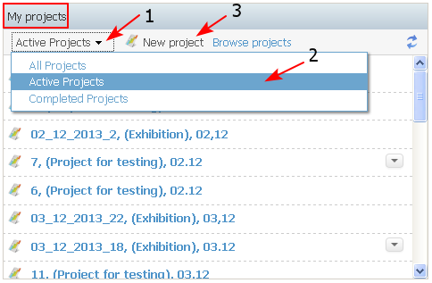
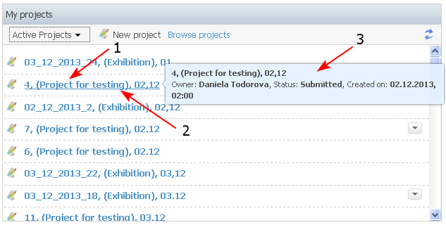
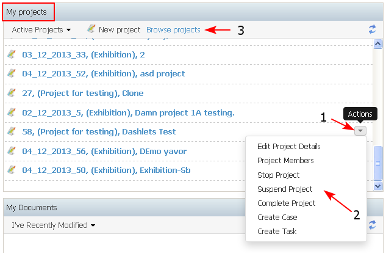

The use case describes the requirements for content that is displayed in the "My Projects" dashlet.
This dashlet is displayed only on the Personal Dashboard and shows all projects to which the user is assigned as a resource.
- There is a filter in the dashlet which displays: All projects, Active projects - all projects which are not in end state (Completed or Stopped), Completed projects - all projects in state Completed (1-2).
From the dashlet the user could create a new project - "New Project" (3).
There will be a filter in the dashlet which will display Favorites.

- The projects in the dashlet are listed alphabetically by Project Name. For each project in the dashlet are displayed: Project ID, Project Type (optional), Project Name. They all are a link (2) to open the corresponding project dashboard. A tool tip (3) displays additional project information: Owner, Status, Created on.

- Next to each project details in the dashlet there is a list with available actions on the project, restricted by user's role in the project, which in general include: Edit Project details, Project Members, Delete Project, Approve project, Suspend/ Restart Project, Stop Project, Comment, Add to favorites (1-2). If an user wants to navigate to a project that's not in this dashlet he could search for it from Browse projects link (3) on the top of the dashlet.
